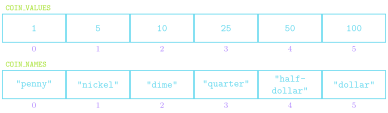

Arrays and Lists
Fred Agbo
October 14, 2026
Happy Wednesday
- Class grouping today: Scan the QR code or go to https://tools.jedrembold.prof/daily
- Class code is
HUsTv1 - Introduce yourselves! What is experience with matrix?

Quick Announcements
- Midterm exam 1 review/solution is posted on Canvas
- Project Breakout is due next week Monday
- Starting early is a key factor to success
- Attend your session meeting for more help and tools needed to succeed on the Breakout project.
Midterm Polling
If there’s a single most important thing to do to help you improve in content understanding and grades in this class what would that be?
- Being allowed to work on a project over an extended
period
- Unfortunately, this is how the curriculum has been
built for years!
- Intensive!
- Unfortunately, this is how the curriculum has been
built for years!
- Take time in class to go over the homework before
it’s due.
- I strongly recommend to start working on homework from Tuesdays
- Visiting office hours and QUAD Center, and ask Section leaders
- Videos and its grade points; Spend some class time
talking about the video concepts
- Please consistently watch the videos. The points are huge overtime.
- I have and will continue to reinforce the topic in
the video before jumping to the activities.
- Further explaining what certain lines of code do.
- Raise your hand to ask me questions or to repeat my explanation.
- I wasn’t as understanding of the material as I
could be …
- Read the text material shared with you chapter by chapter.
- This is a useful supplementary material upon which ALL the lecture contents in the class was built.
- Being allowed to work on a project over an extended
period
Arrays and Lists
- From the earliest days, programming languages have supported the idea of an array, or an ordered sequence of values.
- Individual values in an array are called elements, and the number of elements is the length of the array.
- Each element’s position in the array is given by its index, with index numbers starting at 0 and extending up to 1 less than the length of the array
- Python implements the array concept in a bit more general form called a list.
Reminder: Making Lists
Created using square brackets with elements separated by commas:
COIN_VALUES = [1, 5, 10, 25, 50, 100] COIN_NAMES = [ "penny", "nickle", "dime", "quarter", "half-dollar", "dollar" ]Lists are commonly represented visually or conceptually as a series of numbered boxes:

What we already know
Can retrieve the value of any element in a list by writing the index of that element in square brackets after the list name
COIN_VALUES[3]⟶25COIN_NAMES[2]⟶"dime"
Can concatenate two lists to form a new list with elements from both
[1,2,3] + [4,5,6]⟶[1,2,3,4,5,6]
Can loop through each of the list elements in turn
for elem in my_list: # do stuff with elemwhere
elemis the name of the variable that will sequentially get assigned the value of every element inmy_list
Sequences
- Sound familiar? Lists are just like more general strings!
- Strings and lists are examples of a more general class of object in Python called sequences
- We already knew that all sequences support:
- The
lenfunction - Index numbering starting at 0
- Concatenation using
+or+= - Selection of an individual element using square brackets
- Looping over elements
- The
- We can now add:
- Negative index numbering counting backwards from the end
- Slicing in all forms
- Comparing sequences
- Repetition using
* - Inclusion testing using
inoperator
Problem 1A: Tracing Understanding
What would the below expression evaluate to?
["One", 2, True][-1:1:-1][1]"n"2True- None of the above, or this will error
Problem 1B: Tracing Understanding
What would the below expression evaluate to? Or would it error out?
['One', 2, True][-1:1:-1][0]Problem 2: Airline Boarding
This is a coding problem, work in pairs or trios on a single computer
In
manifest.py, I’ve created a list of passenger information for an airlineThe list has passenger information in a “name”, “age”, “seat” ordering
So, for example, the first few passengers look like:
MANIFEST = [ "Anthony Hutchinson", 77, "24A", "Carol Turner", 37, "8F", ...etc... ]
Problem 2b: Seat Taken?
- In
Prob2.py, you can add your code - Imagine a passenger would like to switch seats. It would be nice to have an easy function to check a potential seat assignment and determine if it is available
- Complete the function
is_seat_availableto check to see if a particular seat is available (not currently assigned) - BONUS: Sometimes robots will ride the plane with names like ‘2F’. Make sure your function still would work properly in that case
Problem 2c: New Family
- Switch who is typing!
- A new family purchased tickets late! Add their information to the
manifest.
- Bill Yu, age 43, in seat 15C
- Jackie Yu, age 39, in seat 15B
- Hayden Yu, age 12, in seat 15A
- Then, complete the function
avg_age_window_seats, which returns the average age of all passengers riding in a window seat (“A” and “F” seats)